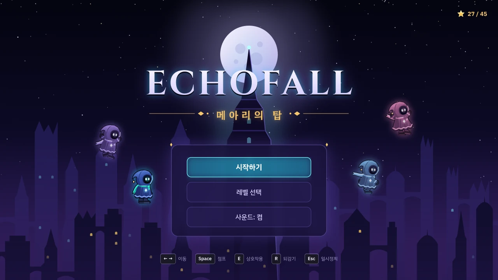
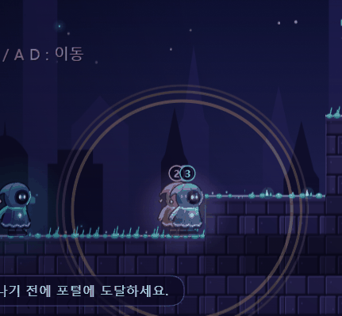
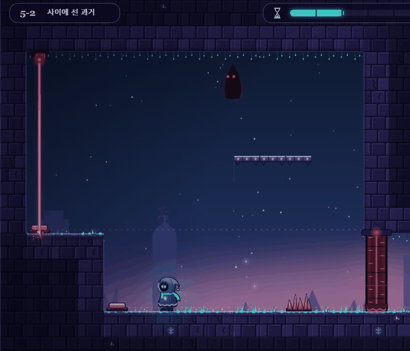
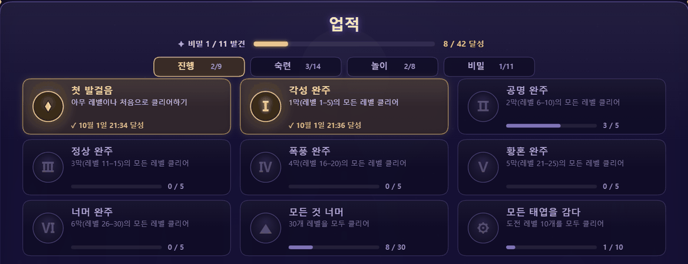

Echofall
메아리의 탑
2026.09 – 현재개발중브라우저 퍼즐 플랫포머
8초짜리 루프를 반복하는 퍼즐 게임입니다. 이전 루프의 내 움직임이 메아리로 남아 다음 루프에서 똑같이 움직입니다. 메아리를 발판, 스위치 누름, 레이저 가림막으로 써서 탑의 출구까지 올라갑니다.
AI를 활용해 제작했습니다. Claude Code와 협업해 만들었습니다. 코드 구현, 레벨 데이터, 검증 도구는 Claude Code가 맡았습니다. 저는 게임 콘셉트와 방향을 정하고, 직접 플레이해 보며 피드백하고, 난이도와 배포 범위를 결정했습니다.
게임 설명

타이틀 화면.
- 루프 하나는 8초(60fps 기준 480프레임)입니다. 시간이 다 되면 처음으로 되감깁니다.
- 한 루프의 움직임을 F 키로 커밋하면 그 움직임이 메아리가 되어 다음 루프부터 똑같이 재생됩니다.
- 메아리는 최대 3개입니다. 4번째를 만들려면 기존 메아리 중 하나를 골라 덮어씁니다(1~3, Esc로 취소). 어떤 기록을 버릴지 고르는 것도 퍼즐입니다.
- 메아리 머리 위에 올라탈 수 있습니다. 메아리는 압력판을 계속 누르고, 서 있는 동안 레이저를 막습니다. 레버는 다시 당기지 않습니다.
- 5막부터는 감시자가 나옵니다. 매 루프 플레이어를 쫓고, 루프가 거듭될수록 빨라집니다. 메아리는 잡지 못합니다.
- 레벨마다 메아리 수와 루프 수 목표가 있고, 목표 안에 깨면 별을 받습니다.

번호가 붙은 메아리가 플레이어와 겹쳐 있는 장면.

레벨 5-2. 위쪽의 붉은 눈이 감시자입니다.
검증 방법
- 자동 풀이
- 빔서치 솔버로 레벨에 해가 있는지 찾음. 표본 검증이며 증명은 아님
- 실제 키 입력
- Playwright로 실제 키보드 이벤트를 한 프레임씩 넣어 클리어를 확인
- 회귀 비교
- 프레임별 해시를 저장해 두고 수정 전후 동작이 같은지 비교
- 직접 플레이
- 제가 직접 플레이해 사람이 풀 수 없는 레벨을 발견. 모든 레벨을 사람이 검증한 것은 아님
해결한 문제들
개발하면서 생긴 문제와 대응입니다. 누가 찾았는지 분명한 항목에만 발견자를 적었습니다.
풀 수 없는 레벨을 막는 자동 검증 도구
- 문제
- 퍼즐은 의도한 풀이가 실제로 성립하는지, 더 쉬운 우회로가 없는지 확인하기 어렵습니다.
- 해결
- 실제 키 입력을 프레임 단위로 재생하는 도구(
kb.mjs)와 빔서치 솔버(probe.cjs)를 만들었습니다. 메아리 수를 줄여도 깨지는지 보는 검사와 랜덤 재시작 샘플링도 더했습니다.
- 확인
- 예전 레벨(2-1~2-4)에서 솔버가 의도한 해를 실제로 찾는 것을 확인했습니다.
- 한계
- 표본 검증입니다. "목표보다 적은 메아리로는 못 깬다"는 결론도 샘플링 증거일 뿐입니다.
자동 검증이 보증하지 못한 것
제가 직접 플레이해 발견
- 문제
- 도구로 해가 있다고 확인한 레벨 중에, 타이밍 허용 구간이 7~9프레임뿐이라 사람이 손으로 풀기 어려운 레벨이 있었습니다.
- 사례
- 5-3, 5-5는 가만히 서서 시작해야 감시자가 깨어나지 않는 풀이였습니다. 보통처럼 바로 움직이면 풀 수 없었습니다.
- 배운 점
- 자동 검증은 해가 있음을 보증할 뿐 사람이 풀 수 있음을 보증하지 않습니다.
- 새 기준
- 타이밍 허용 구간 약 20프레임 이상, 움직이는 첫 프레임부터 시작해도 풀릴 것, 입력을 앞뒤로 몇 프레임 흔들어도 클리어되는지 보는 견고성 테스트.
- 현재
- 4막, 5-3, 5-5, 6-5의 재설계는 진행하지 않았고, 해당 레벨은 그대로 두었습니다.
실제 키 입력으로만 검증
- 문제
- 처음에는 디버그 함수와 스크립트 입력으로 클리어를 확인했는데, 이 경로는 실제 키 입력과 다를 수 있었습니다.
- 원인
- 모든 루프는 키 입력으로 시작해야 하고, 가만히 있는 루프도 ↓ 키로 시작해야 실제 플레이와 같아진다는 규칙을 발견했습니다.
- 해결
- 검증을 Playwright 실제 키보드 이벤트로 통일했습니다. 스크립트로 자동 클리어한 경우에는 업적을 주지 않게 막았습니다.
레벨을 고쳐도 기록을 잃지 않게
- 문제
- 레벨을 개편하면 기존 플레이어의 저장 기록이 바뀐 레벨과 맞지 않게 됩니다.
- 해결
- 레벨 데이터에 개정 번호
rev를 두었습니다. 개정된 레벨은 별과 클리어 기록은 유지하고, 리플레이·최고 기록·황금 기록·무사고 기록만 무효화합니다.
- 검증
- 마이그레이션 테스트 스크립트(
rev_test.mjs)로 확인했습니다.
기존 동작을 깨지 않기
- 문제
- 레벨을 수정하면 다른 레벨이나 숨은 방의 동작이 바뀔 수 있습니다.
- 해결
- 프레임별 해시 베이스라인을 저장해 두고, 수정 뒤에도 기존 레벨과 숨은 방의 동작이 바이트 단위로 같은지 비교했습니다.
- 검증
- 숨은 방은 입구 발견부터 비밀 업적까지 실제 키 입력으로 통과하는 종단 간 스크립트로 확인했습니다.
기믹을 위한 장애물이 되지 않게
제 피드백
- 문제
- 4막을 허공 메아리 기믹으로 채웠더니, 맵이 기믹만을 위한 장애물처럼 보였습니다.
- 원칙
- 기믹을 지워도 방으로서 말이 되는 구조를 먼저 짜고, 기믹은 그 안에서 풀이 재료 중 하나로 넣는다는 설계 원칙을 세웠습니다.
- 현재
- 이 원칙에 따른 4막 재설계는 진행하지 않았습니다.
AI의 판단이 틀렸던 사례
- 가정
- Claude Code는 점프의 정점이나 하강 중에 커밋하는 방법으로는 원하는 높이에 도달할 수 없다고 판단했습니다.
- 확인
- 실험해 보니 틀렸습니다. 정점 근처에서 커밋한 메아리에 올라타거나 메아리를 쌓아 더 높이 갈 수 있었습니다.
- 대응
- 실험 결과에 맞춰 계획을 수정했습니다.
엔진 설계
게임은 실제 시간이 아니라 프레임 카운터로 진행합니다. 60fps 고정 프레임의 결정론적 시뮬레이션이라, 같은 입력이면 항상 같은 결과가 나옵니다.
메아리는 입력을 다시 시뮬레이션하지 않고, 프레임마다 저장한 x, y 좌표를 그대로 재생합니다. 그래서 메아리의 움직임은 틀어지지 않습니다. 대신 메아리가 압력판, 레버, 레이저와 만날 때의 규칙은 따로 정해야 했습니다.
메아리는 입력이 아니라 좌표 기록입니다. 시뮬레이션이 결정론적이어서 같은 키 입력을 다시 넣으면 같은 결과를 재현할 수 있고, 이것이 자동 검증의 바탕이 됩니다.
- 한 번의 플레이 세션(루프 번호, 메아리, 상태)을 다루는
Session과 한 루프의 물리·오브젝트를 다루는 World로 나눴습니다.
- 맵은 18행 32열 타일 데이터입니다. 움직이는 발판, 블록, 메아리를 올라탈 수 있는 고체로 다룹니다.
- 레이저는 매 프레임 광선 경로를 계산하고, 문·게이트·발판·블록·메아리가 광선을 가립니다.
- 막과 레벨 수를 코드에 고정하지 않고 데이터에서 읽게 했습니다. 막이 늘어나도 구조를 바꾸지 않아도 됩니다.
- 자동 테스트를 위해 프레임을 수동으로 진행하는 디버그 API를 열어 두었습니다.
진행 구조와 부가 콘텐츠
- 30캠페인 레벨 (6막)
- 10도전 레벨
- 6숨은 방
- 42업적 (탭 4개)
- 타이틀에서 허브로 들어가 캠페인, 도전 레벨, 레벨 에디터를 고릅니다. 도전 레벨은 캠페인 5레벨, 에디터는 10레벨을 깨면 열립니다.
- 막마다 배경, 음악, 색감이 다릅니다. 6막 6-5 「너머」가 마지막 레벨입니다.
- 도전 레벨은 천칭 5개와 태엽 5개로, 캠페인보다 타이밍이 빡빡합니다.
- 레벨마다 숨겨진 황금 기록 기준이 있고, 그 안에 깨면 레벨 카드에 황금 테두리가 생깁니다.
- 숨은 방 6개는 맵 안의 합창 문, 테두리의 구멍, 메아리가 드러내는 계단 등으로 들어갑니다. 숨은 요소에는 일부러 모호한 힌트만 둡니다.
- 효과음과 배경음악은 오디오 파일 없이 Web Audio API로 코드에서 합성합니다.

업적 화면. 업적을 진행, 숙련, 놀이, 비밀 4개 탭으로 나눴습니다.
처음 만든 허브와 버튼은 볼록하고 반짝였습니다. 제가 "AI가 만든 것 같다"고 지적한 뒤 그림자, 광택, 그라디언트, 글로우를 걷어내고 둥근 정도를 줄여 평평한 행 구조로 다시 만들었습니다.
기술
- HTML5 Canvas 2D
- JavaScript
- Web Audio API
- localStorage
- Playwright (검증)
프레임워크, 라이브러리, 번들러 없이 정적 파일만으로 동작합니다. 진행도, 업적, 설정은 브라우저 localStorage에 저장합니다.
제 역할과 AI 역할
AI(Claude Code)
- 코드 구현
- 레벨 데이터 제작
- 검증 도구와 솔버 작성
- 수치 실험
- 버그 수정
제가 한 일
- 게임 콘셉트와 설계 방향 결정
- 허브 구조와 해금 조건 결정
- 이스터에그, 숨은 방, 업적 아이디어 방향 제시
- 막별 난이도 곡선 목표 제시
- "AI가 만든 것 같은" UI를 지적하고 방향 제시
- 직접 플레이 테스트와 피드백: "절대 못 깬다", "기믹이 장애물처럼 보인다", "6-5가 너무 어렵다"
- 배포 시점과 범위 결정
- 학생 평가자를 고려해 난이도를 낮추기로 결정
현재 상태
- 개발중입니다. 저장소 첫 커밋은 2026-09-23입니다.
- 2막과 3막의 재설계는 마무리했습니다.
- 4막, 5-3, 5-5, 6-5의 재설계는 진행하지 않았고, 해당 레벨은 그대로 두었습니다.
- 막별 난이도 목표는 일부 5·6막 레벨이 예전 설계 그대로라 완전히 맞추지 못했습니다.
- 검증은 자동 검증(표본 검증)과 일부 직접 플레이로 했습니다. 모든 레벨을 사람이 검증하지는 않았습니다.